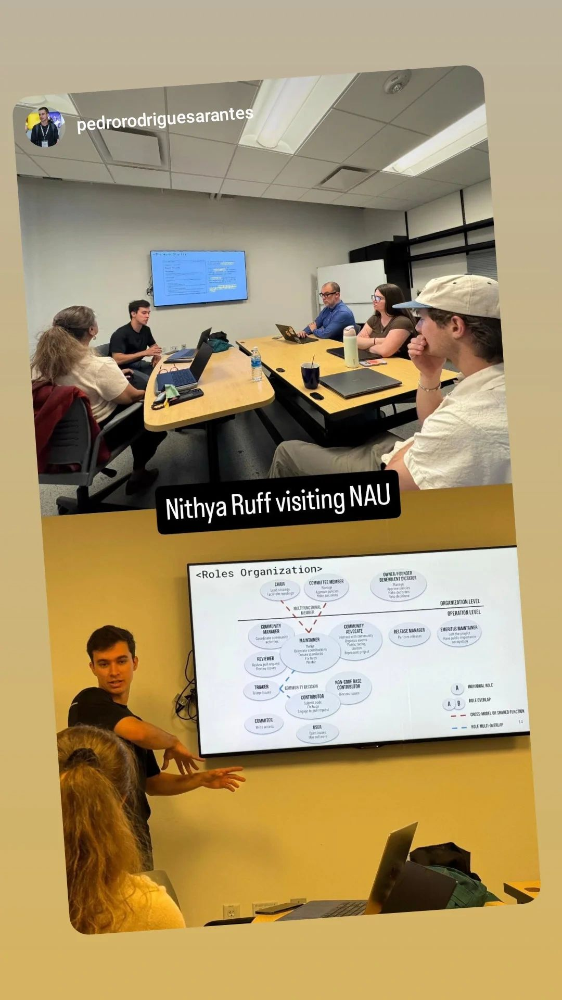
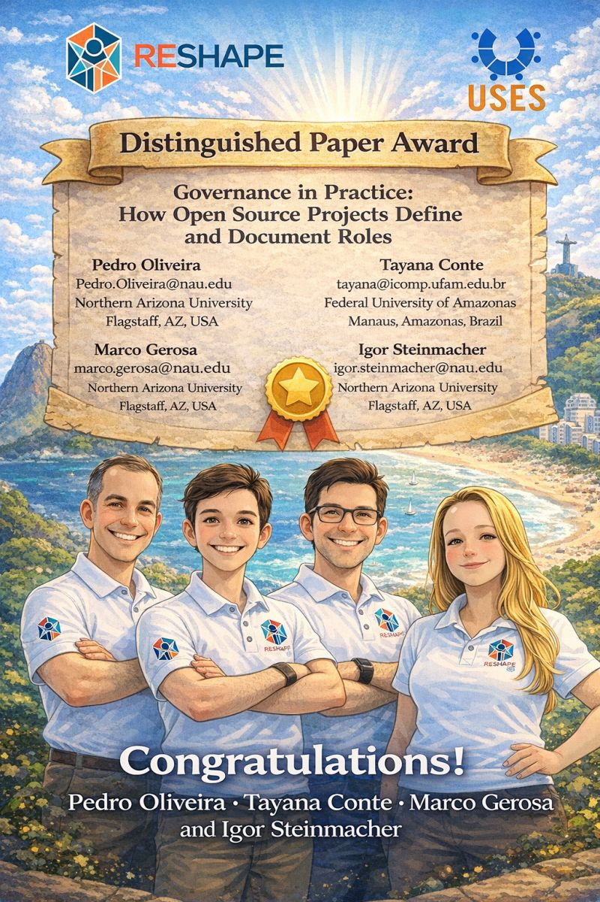
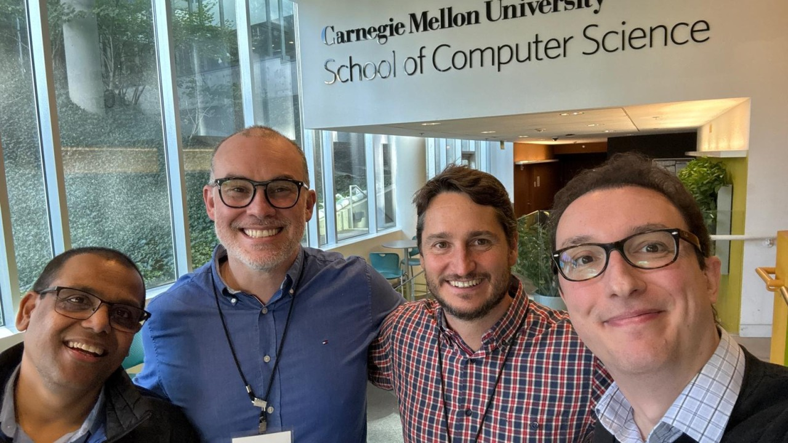

news
News
Awards, talks, papers, and arrivals. Items tagged with a project also appear on that project's page.
Marco Gerosa receives an NAU TRAIL grant for AI-powered interview training
The project, AI-Powered Interview Training for Requirements Elicitation in Software Engineering, has students interview AI chatbots that play the client, so they can practice gathering software requirements.
Two papers on generative AI at HumanAISE 2026, co-located with FSE
Lab members co-authored two papers at HumanAISE 2026 in Montréal: one on how hackathon participants use generative AI, and one on developer productivity with GenAI. Read more →
Igor Steinmacher receives the NAU Award for Graduate Research Mentorship
Part of NAU's 2026 Research and Creative Activity Awards. Igor has mentored 15 graduate students at NAU and currently mentors six master's and PhD students; his former students hold faculty positions around the world.
Second place in the ACM Student Research Competition at ICSE 2026
At ICSE 2026 in Rio de Janeiro, Sam Utzinger finished second in the ACM Student Research Competition and Pedro Oliveira reached the finals. The lab also presented papers at SEET, IDE, GAS and CHASE. Read more →

Nithya Ruff visits NAU to reflect on decades of Open Source leadership
Nithya Ruff joined our Open Source course and AZ Tech Week to share reflections on the past, present, and future of open source software. Read more →

Governance in Practice wins ACM SIGSOFT Distinguished Paper Award at CHASE 2026
Our paper on how open source projects define and document roles, led by PhD student Pedro Oliveira, received a Distinguished Paper Award at CHASE 2026. Read more →

Reflections from the Accountability in Open Source Software Ecosystems Workshop at CMU
Igor joined researchers and practitioners at Carnegie Mellon University to discuss accountability, sustainability, and AI-assisted collaboration in open source communities. Read more →
Do you know what Open Source Software (OSS) is?
It's the code that powers the world—freely accessible, community-driven, and built collaboratively. But for beginners, jumping into OSS can feel like being handed the keys to a spaceship without a man… Read more →
Programming is hard... but can a chatbot help? 🤖
At RESHAPE Lab, we’re taking on a big question: Can large language model (LLM)-based chatbots teach programming students the cognitive skills they need to succeed—skills often called 'computational th… Read more →
RESHAPE Lab paper accepted at AIware Conference 2024
We are excited to announce that our latest research paper ('Unveiling the Potential of a Conversational Agent in Developer Support: Insights from Mozilla’s PDF.js Project'), developed in collaboration… Read more →
Collaboration USES/UFAM -- RESHAPE/NAU!
NAU will receive six Brazilian scholars as part of a project led by the Institute of Computing at the Federal University of Amazonas, that includes a partnership with the School of Informatics Computi… Read more →
RESHAPE Lab hat trick at ICSE 2024!
RESHAPE Lab will be very well represented at ICSE 2024 in Lisbon! Members of our lab are co-authors of three papers in the Research Track that will be presented at the conference: Read more →
Bianca Trinkenreich received the 2024 ACM SIGSOFT Distinguished Dissertation Award
Bianca Trinkenreich received the 2024 ACM SIGSOFT Distinguished Dissertation Award for her Ph.D. dissertation “Understanding and Supporting Women’s Participation in Open Source Software” (Northern Ari…